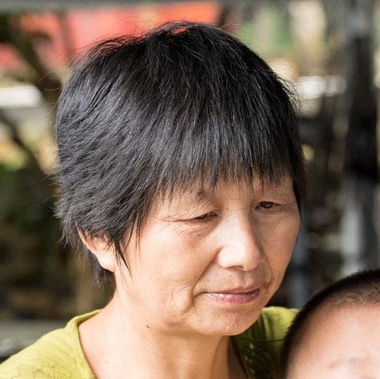
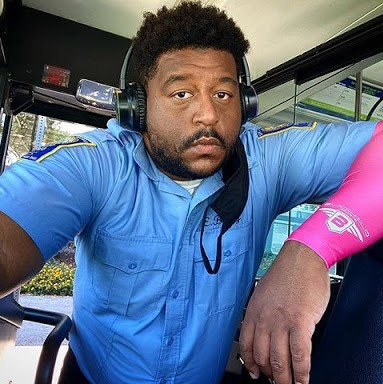

Wayve
Mobility Design Challenge
The Problem
How Might We help seniors stay informed & safe during COVID-19 when using the Big Blue Bus at the Santa Monica Promenade?
The Solution
A publically accessible, interactive kiosk with stop-specific bus information. Wayve eases the communication gaps caused by COVID mandates allowing older riders to access the information they need with a touchless gesture controlled interface without a smartphone.
- Tools Used
Adobe Illustrator, Adobe Photoshop, Adobe After Effects, Figma
- Skills Developed
User Research, UX, UI, Branding, Prototyping, Wireframing
- Team
Vianey Garcia, Imani Ritchards
- Role
UX/UI Designer
Observations
What we noticed:
The Promenade is a pedestrian mall and transportation hub where the Metro Rail and the Big Blue Bus system meet. At the promenade, we observed a communication gap between the people and the bus and noticed the passengers' frustration.


Person left behind by a bus driver and didn’t understand why. Several other people we talked to had similar experiences.
Secondary Research
Public Transit and Elderly Populations
Drive Less
Elderly populations lose their ability to drive, public transit becomes a lifeline.
Affordable Public Transit
Alternatives to public transit are economically prohibitive, so age friendly transit is important.
Importance of Mobility
The eldery are at risk for isolation and social exclusion. That is even more pronounced during COVID-19.
Competitive Analysis
Before we came up with the Wayve concept, we looked into the systems that currently exist to help the people move around Santa Monica.
- Elderly passengers have access to real-time call and text lines, but those services do not alleviate the specific problems caused by COVID.
- Transportation services that are specifically designed for elderly passengers are not app-based. They are only accessible in-person or by phone.
- Existing transit apps are useful for navigating during COVID, they are not a solution for our elderly passengers as they typically don’t use their phones for navigation.
Real-Time Signals
Digital signs that show bus route and arrival times.
Real-Time Arrivals Call & Text Line
Call for up-to-date bus information based on Stop ID.
GoGo Grandparent
A way for elderly to use Lyft & Uber as well as get food and groceries delivered.
MODE
On-demand transport to the elderly (65 +) and disabled (18+)
Big Blue Bus Transit App
BBB’s official app for trip planning and real-time bus information.
Google Maps
Google’s web mapping service that offers real-time traffic conditions and transportation information.
Interviews
What We Learned:
Many users were concerned about COVID exposure while riding the bus.
Riders are frustrated by the communication gaps COVID-19 mandates presented.
The elderly users we talked to didn’t use their phones for navigation.
“I don’t know if everyone who has gotten on the bus is wearing a mask. I worry if someone coughed on the bus and then I got on.
„
Penny
Big Blue Bus Passenger
“Some bus drivers don't even stop. Yesterday when I wanted to get on the bus I waved at the bus and it didn't stop for me.
„
Laura
Big Blue Bus Passenger
“My phone is not good, it can't do that.
„
Edith
Big Blue Bus Passenger
Conversations with Big Blue Bus Stakeholders
“Face-to-face interaction is now pretty much nonexistent. We pick up without any eye or verbal contact and it’s taken away a lot of the “soul” of the job.
„
Eric B.
Big Blue Bus Operator
Passengers lack communication with bus operators.
The current system in place to receive boarding assistance could leave those with invisible mobility issues out.
Key Insights
Anxiety
The inconsistent enforcement of COVID mandates adds anxiety and uncertainty to the trips of senior travelers.
Communication
COVID regulations have created a communication gap leaving both riders and drivers frustrated.
Posted Info
Senior passengers rely on posted schedules to find updated information because they typically do not use smartphones to navigate.
Transportation
Many seniors depend on public transit, especially those who are low-income and isolated.
Target User
Solving The Problem
Lydia's Current Journey
Pain Points
- Feels unsafe because she does not know crowd size
- Does not know where to get her transportation questions answered now that she can't talk to the bus operator
Lydia's Journey with Wayve
Goals
- Can get her transportation questions answered
- Knows bus crowd information before boarding
- Has access to information she needs to travel with independence
Building Wayve
Paper Prototype
We prototyped Wayve using an oversized cardboard box and paper to mimic the experience for the user.
Wireflow
The annotated wireflow shows how Wayve would function in a scenerio where Lydia needs help finding her metro transfer.
Meet Wayve
Wayve is a publically accessible, interactive kiosk with stop-specific bus information. Wayve is a Kiosk because users need access to this information even without a smartphone.
Why a Kiosk
Elderly users need access to this information even without a smartphone. Changes in vision and motor control make small screens impractical.
The Kiosk allows older adults to see information on larger screens. The font size is larger and higher contrast to accommodate vision loss that occurs with older age.
Keeping Users Informed and Safe
Users can see stop-specific bus information including:
- Approaching buses
- Bus arrival status
- Crowd information
- Request assistance boarding a bus
Seat Sensors are used to gather real-time crowd information. Enough pressure on the seat will send a signal to Wayve.
The information helps users understand:
- How many people are on the bus
- Big Blue Buses limited capacity requirements during COVID-19
Speak to a Representative Through Wayve
Users can also ask navigation questions or get general help through a video call with a remote assistant using a dial-in number. This allows users to hear and be heard in noisy environments.
- Call the number or scan a QR code on the Wayve screen to connect
- Hear the audio through the phone
Users can communicate with Wavye in both Spanish and English.
Any dialogue is captioned on screen and ASL interpreters are available upon request.

Gesture Control
Touch-based systems are unsafe due to COVID-19 and noise levels at bus stops make voice activated systems prohibitive.
Gesture control solves these problems.
Wayve utilizes a finite set of common gestures accompanied by text-based instructions.